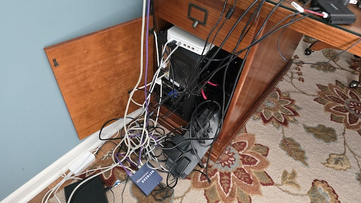

About My Server
This server is somehow running on old computer parts I've gathered around my house.
There is so much dust on this machine that it practically qualifies as a fossil.
And yes, that is an Apple Airport Extreme on top of it!
You know what they say "If it ain't broke don't fiddle with it."
Here are the specs for this system:
- CPU: Ryzen 5 3600
- GPU: MSI GT 710
- RAM: 8GB
- Internet: Ethernet connection
- PSU: 500 watts
Additionally, the glass covering the components has broken, exposing everything inside.
If you have any requests, information, or complaints, feel free to send them to my email.
